k-Day 070｜等待是必要的
窗外的天剛亮，同樣是被火車進站的聲音和車站廣播叫醒。車站暖氣充足，昨晚沒有拿出太多東西，因此很快就收拾妥當，坐在長椅上想著今晚要住在哪裡。
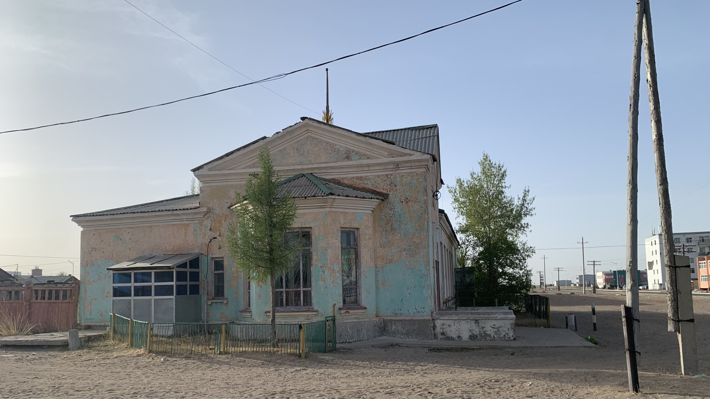
牽著二十三號走出車站，在附近晃蕩。
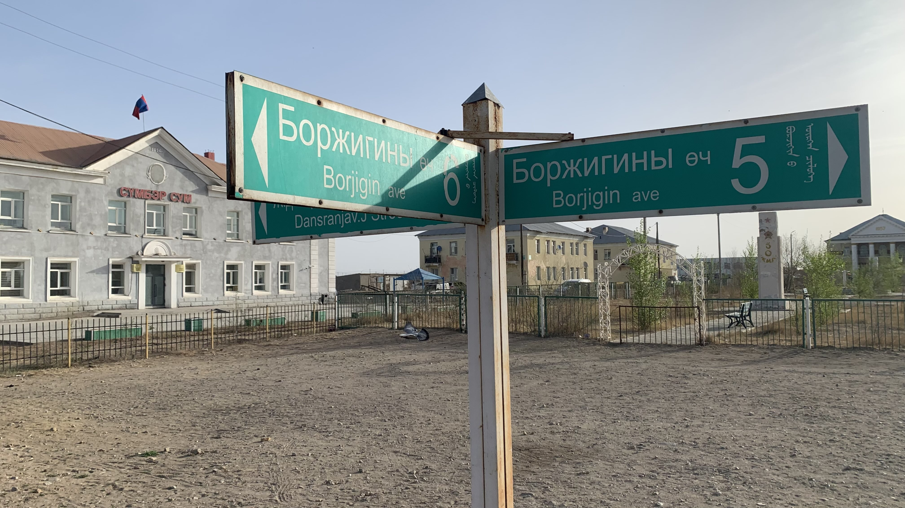
路標上有三種文字，一種是傳統蒙文，一種是西里爾字母，另一個應該是英文？背景建築插著蒙古國旗，想必是市政廳這樣的官方機構。
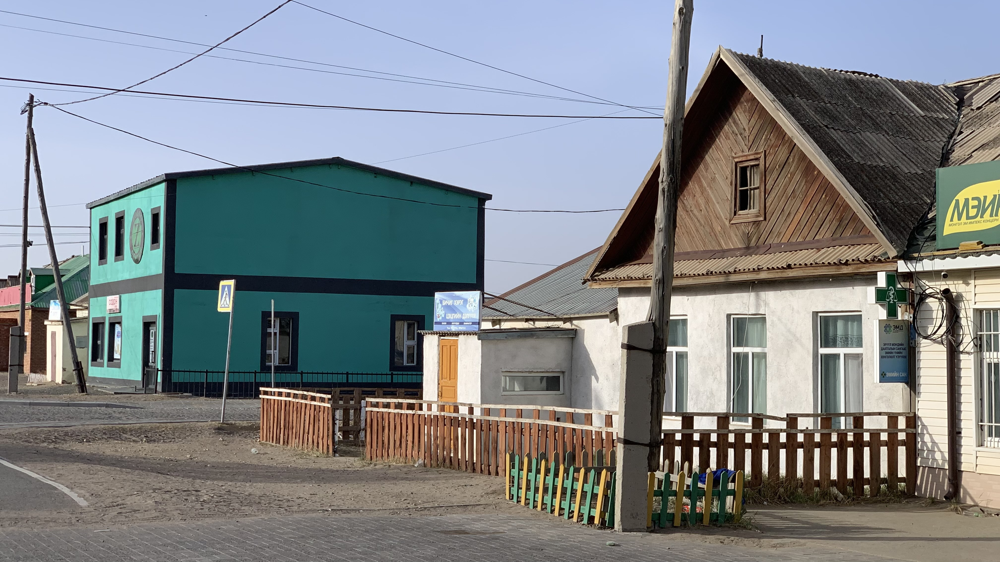
這裡的房子和賽音山達有點像，當時急著進城又匆匆離開，沒有仔細觀察。
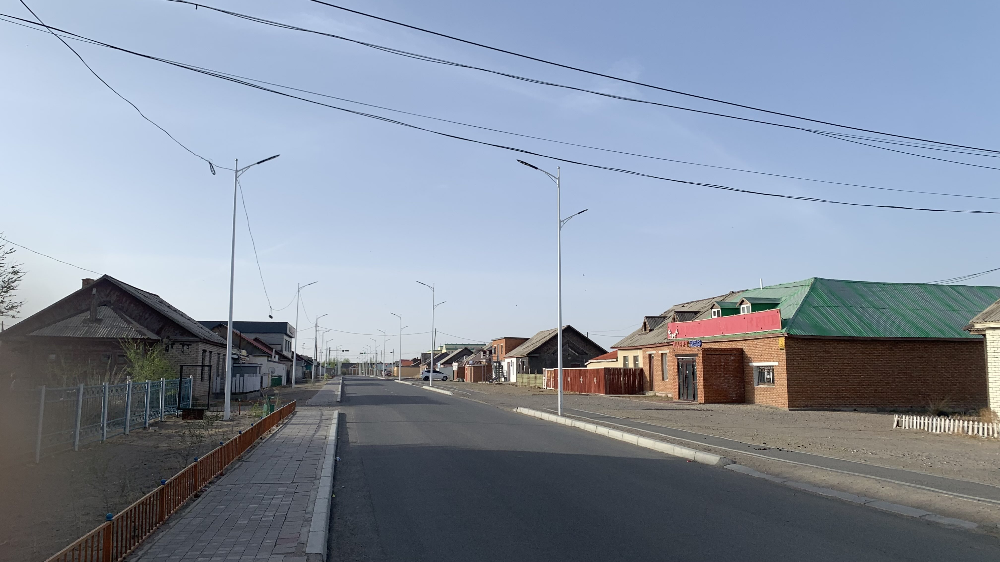
喬伊爾的房屋似乎又漆得更繽紛了一些，記得賽音山達的房子還保留了磚牆和木板紋理等原始材質的外觀。
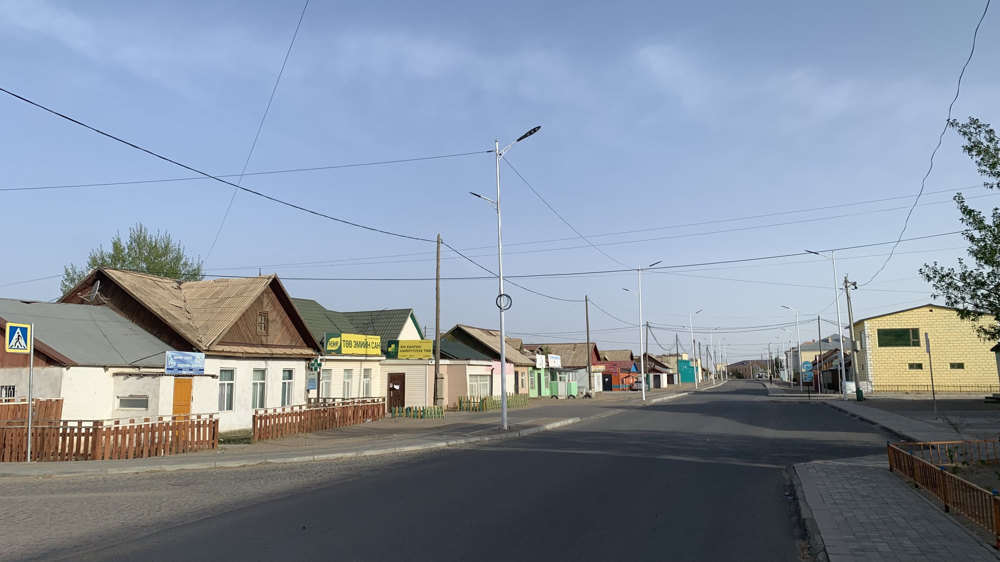
既然明天要在此休息，那就住在這附近吧。
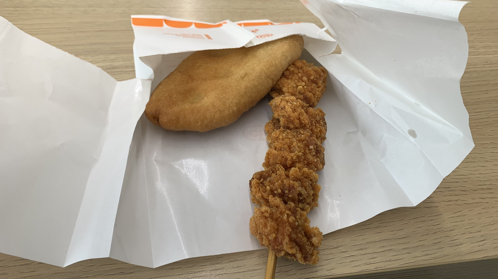
首先解決早餐問題，滑向城市的另一邊，回到昨天的CU，買了早餐雞塊和一個炸包。
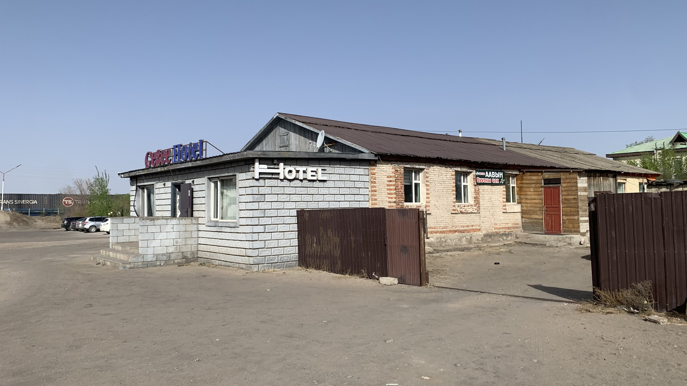
吃飽後回到車站，旁邊是昨晚在車站徘徊時發現的旅館。還沒九點就推門進去詢問可否入住。不確定是老闆還是員工的女性躺在其中一間房間的床上，起身後打了通電話，電話另一端的人用英語報價，一晚90000元。我詢問可否給個優惠呢？老闆說可以的，如果願意住在共用廁所的房間，一晚是80000元。車子可否進房呢？老闆出門看了看二十三號，回來點頭說沒問題。
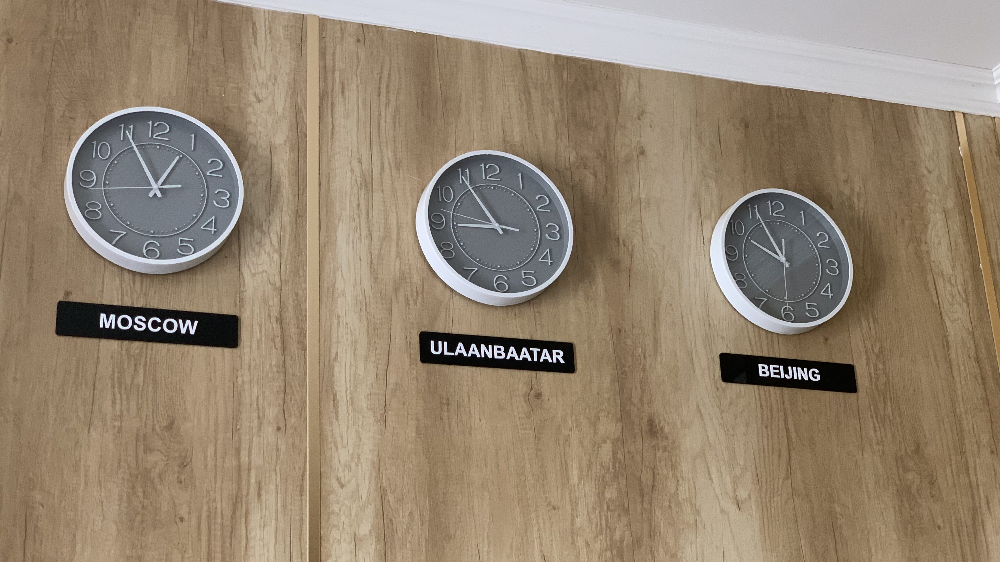
搞定了溝通問題，老闆立刻起身打掃，我坐在門口的長椅上發呆。牆上的時鐘已經不是東京倫敦紐約北京這種制式化的排列，此處的世界中心是烏蘭巴托、莫斯科和北京。
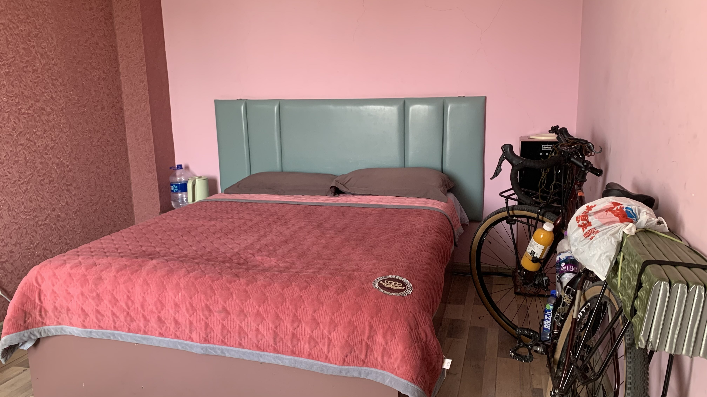
約莫九點老闆說打掃完了，讓我進房。將二十三號靠在牆上，開始了長達五小時的洗衣服和補胎之旅。
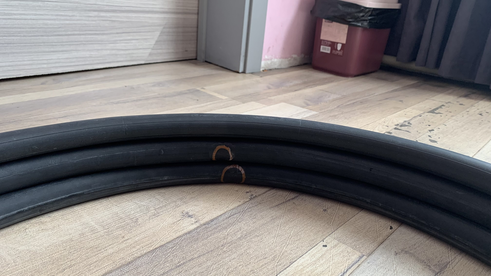
補了三條破胎，發現最後兩條破的地方非常相近，且靠近輪框位置。先用手摸過確認沒有小碎石或尖銳物，再用電火布把昨天發現的黃色膠條裂縫貼上。貼膠帶時手摸到一處尖銳的小點，跟著電火布一起撕下來，重新貼上一段，裝上內外胎，打氣完成又過了一小時。
倒在床上啃剩下的堅果，看著滿地修車工具、散落的行李和正在晾曬的衣服鞋襪。
大概下午三點多，前輪發出巨大的洩氣聲，不到一分鐘就回到扁塌的狀態。
人在絕望時會呈現抽離意識放棄抵抗的行動，就像在別力古台被藥局藥師坑的時候。
順從地重新拆下輪框、再次挖開外胎、再次拉出內胎，再次檢查破洞。原來是剛剛補胎太心急，沒有等膠水乾透就貼上補胎片，撕下補胎片時不小心把橡膠扯破，呈現一個大口。拿出更大的補胎片蓋住，再仔細檢查剛剛補過的另外兩條內胎，重新沾上膠水，按下手機計時，時間到了再重新壓緊。
將補好的內胎塞進外胎縫隙，又是手忙腳亂將外胎擠進輪框裡，將輪框裝回前叉，重新打氣。躺回床上兩眼無神地盯著前輪。看氣象明天會下雨颳風，體感溫度即將降到-4度左右，決定在此多住一天。
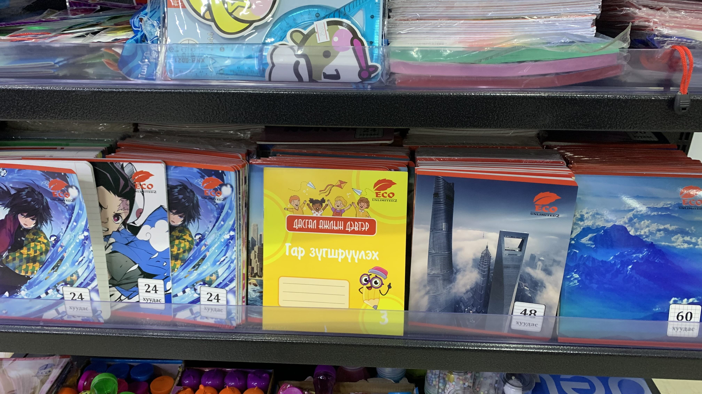
晚上八點出門到馬路對面的超市採購晚餐，蒙古小朋友用的筆記本也是鬼滅之刃，旁邊的大樓和高山就不認識了。
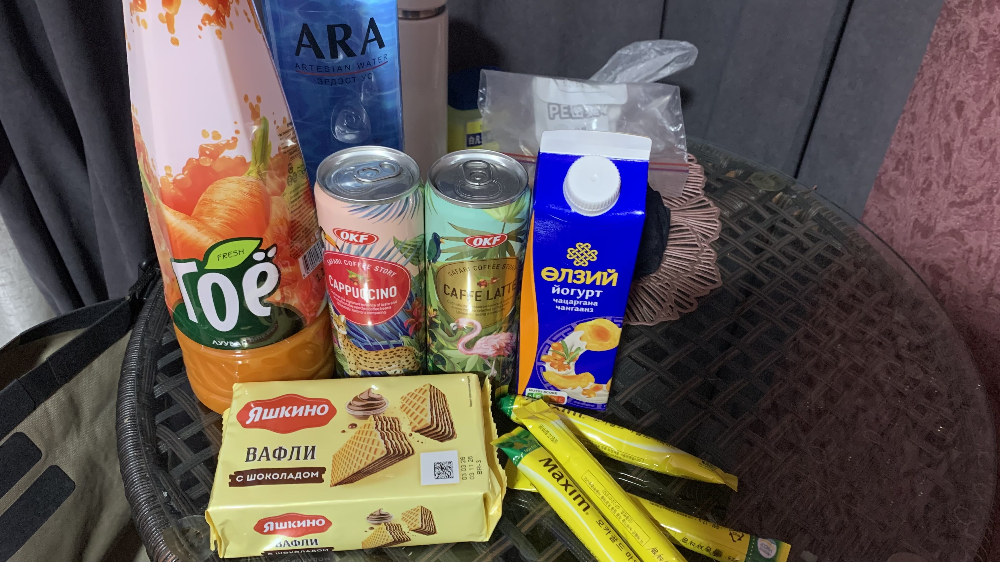
已經是晚上八點了，從早上八點入住到此刻我都經歷了什麼呢？這房間是無限城嗎？
今日花費： 早餐 7500、咖啡＋水＋飲料＋點心 29300元